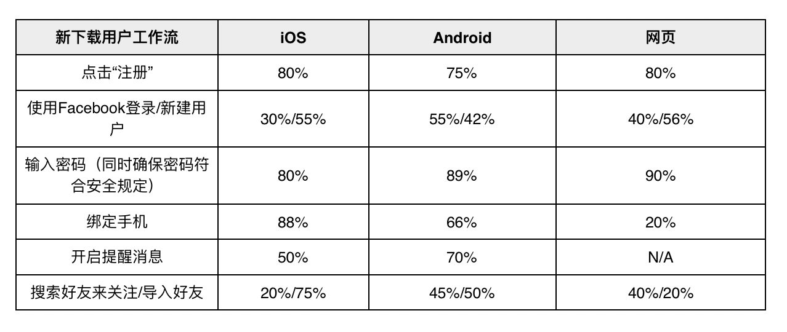

- 00 开篇词 打造千万用户的世界级产品.md
- 01 什么是优秀的产品经理？.md
- 02 硅谷的产品经理是什么样子的？.md
- 03 科技巨头和初创公司的产品经理有什么不同？.md
- 04 产品经理和项目经理有什么区别？.md
- 05 硅谷产品经理每天在做什么？.md
- 06 硅谷产品经理们都来自什么背景？.md
- 07 如何寻找用户需求？.md
- 08 目标客户和用户画像.md
- 09 手把手教你写用例： 优化微信加好友的功能.md
- 10 什么是最小化可行产品（MVP）？.md
- 11 案例：产品发布之前出了乱子，如何权衡取舍？.md
- 12 制定产品成功指标.md
- 13 如何撰写产品需求文档？.md
- 14 如何用数据做出产品决定？.md
- 15 如何组织有效的会议？.md
- 16 如何和工程师有效沟通？.md
- 17 如何与设计师有效沟通？.md
- 18 如何搞定A_B测试？.md
- 19 增长黑客的核心公式.md
- 20 想要增长，你的团队需要高效的工作流.md
- 22 硅谷高管的UIE（Understand, Identify, Execute）增长论.md
- 23 增长的核心在于减少用户阻力.md
- 24 产品增长的代价，如何权衡取舍？.md
- 25 三分靠策略 七分靠执行.md
- 26 为什么加班很久但是没成果？产品开发流程有问题.md
- 27 如何激励和管理比你资深的工程师、设计师？.md
- 28 产品经理的晋升秘密.md
- 29 你需要一个产品路线图.md
- 30 如何制定产品优先级 ？.md
- 31 好的产品经理和卓越的产品经理.md
- 32 产品经理面试考察的是什么？.md
- 33 如何提升产品感（product sense）？.md
- 34 如何提升产品经理的综合素质？.md
- 35 非计算机专业也能做产品经理？.md
- 36 模拟一场硅谷的产品经理面试.md
- 尾声 每个世界级的产品都有其使命.md
- 新书首发 《硅谷产品：36讲直通世界级产品经理》.md
22 硅谷高管的UIE（Understand, Identify, Execute）增长论
在我刚刚进入Facebook做产品经理时，干劲儿很足，经常会跟我的导师（现在已经是Facebook的高管了）说：“我想到一个方法，我觉得非常靠谱，肯定可以帮助咱们的产品实现增长，我们试试吧”。
我这样跟我的恩师说了几次后，他跟我说：“我发现你经常会有一个新想法，然后找证据证明这个想法是对的。但是，你并没有全盘考虑所有可能的机会，而是直接跳到了这一个想法上。”
接着，他向我介绍了“了解，找到，执行”（Understand, Identify, Execute）这个增长理论。
了解：就是要综合理解用户体验的每一步，然后深挖每一步中每一类用户群体的数据。
找到：就是在了解之后，找到有意思的数据点，挖掘出具体的想法，并且选定最重要的想法。
执行：就是设计开发，然后进行实验验证，如果实验结果靠谱就发布。
用我导师的话说就是，我的问题是只做了“找到”和“执行”，但是没有“了解”。如果没有充分了解产品每一步用户流的表现情况，就不能找到最具价值的想法。结果是，这样做可能会对产品指标有积极影响，但却忽略了更好的主意。
这个增长理论，点醒了我，使我受益匪浅，到现在我都以此为警钟。
“了解，找到，执行”增长论
接下来，我通过一个具体的案例，给你讲讲如何把“了解、找到、执行”这个增长理论，应用到实际的产品增长中。
先给你推荐一个，我现在最喜欢用的、也是最好用的“了解”的方法，那就是产品流程的每一步完成率的表格。
也就是下面的表格，它描述的是刚刚下载了APP的新用户如何开启使用APP的体验，包括了注册账号、设定密码、关注朋友等， 也就是说当用户完成了最后一步，他们就完成了新用户的设定，可以开始使用APP啦。

但是，如果用户没能坚持到最后一步，那么每一步都会降低用户的活跃度。比如，如果用户没有注册成功， 后面的体验就无法开始；再比如，如果用户没有开启消息提醒功能，我们就没有通知用户新消息的途径；再比如，如果用户没有得到其他好友的关注，他就无法真正体会到这个APP的价值。
表中的每一列，代表了不同的平台，因为iOS、安卓和网页版的设计界面是不同的；表中的每一行代表进行到这一步的用户中，百分之多少完成了相关操作。因为隐私原因，我改动了表格中的一部分数据和信息，但这并不会影响你对今天内容的理解。
比如，80%的iOS用户下载之后点击了“注册”按钮，在点击了“注册”之后，30%的人使用Facebook登陆，55%新建用户名，剩下的15%流失了。我们这里假设，在所有用户中，iOS端用户占50%，安卓端用户占45%，网页端用户占5%。
有了这个完成率的表格，接下来，你就可以分析表中的数据，利用“了解、找到、执行”理论实现产品增长了。
第一步，了解。
了解的意思是要把整体的产品流程按一定的逻辑结构划分，分别看各个步骤的数据，从而了解产品的哪个部分有进一步增长的机会。
通过上面表格中的数据，你发现了下面三点：
- 用户在网页版“绑定手机”这一步流失极其严重；
- 用户在iOS版开启提醒消息的比例非常低；
- 用户在iOS版点击注册以后，使用Facebook登录的比例非常低。
接下来，你需要分析一下出现这三种现象的原因，并试着提出解决方案。
- 通过用户调查，我们发现使用网页版的用户一般都是使用电脑或者iPad登陆，这个时候手机不一定在身边，“绑定手机”这一步需要他们找到手机，进行验证，所以比较麻烦。 针对这一项内容，我们尝试增加“邮件验证”的功能，这样可以方便他们在同一台设备上完成验证。
- 通过调查分析，我们发现iOS版用户开启消息提醒的比例较低，原因是iOS系统在开启消息提醒功能时，会询问用户是不是愿意开启这个功能。这时，大部分用户并不了解产品，而我们也没有给他们介绍产品的功能，所以大部分用户都会选择不开启这个功能。 针对这一项内容，我们的想法是，要么在用户刚开始使用时就向他们介绍产品的功能，要么等到用户体会到APP的价值、建立了对APP的信任后，再询问他们是否要开启消息提醒的功能。
- 对于iOS用户使用Facebook登录比例较低这一项，我们发现iOS使用Facebook登录时，系统会跳转到Safari浏览器， 打开的是网页版的Facebook。这时，很多用户还没有登录网页版的Facebook，所以他们需要重新登陆一次，而安卓用户可以直接跳转到Facebook的APP，无需重新登陆。 针对这个问题，我们要么修改一下iOS的逻辑，让它跳转到Facebook的APP而不是网页，要么就在网页版增加根据APP自动同步用户名、密码的功能，从而实现自动登录。
第二步，找到。
首先你要知道你们在乎的最高层指标是什么，找到最重要的问题，然后设定相关的产品功能，这就需要我们先估测每一个新功能可能带来的价值有多大。
- 网页版用户在所有用户中的比例非常低，只有5%左右，大部分用户直接使用安卓或者iOS 平台的APP。所以，网页版的功能优化的价值一般。
- 打开消息提醒和新增用户无关，更多的是留存。那么，开启消息提醒对用户留存有什么作用呢？假设我们发现，开启消息提醒功能的用户比例提高20%，可以让用户的7天留存天数（过去七天中使用了这个产品几天）增加5%。现在只有50%的用户开启了消息提醒，所以这一步的优化可以提升的极限50%（也就是100%用户开启提醒消息功能）。
- “使用Facebook登录/新建用户”这一步，目的是让用户创建用户名。如果，用户点击“使用Facebook登录”这个按钮可以直接创建新账户，那就比让用户想一个别人没有注册过的用户名，体验要好得多。 如果能让更多的用户轻松使用“Facebook登录”来创建用户名和账号，也就是可以提升新增用户的数量。现在85%的用户能够完成新增用户名这一步，所以我们其实就需要让剩余的15%的流失用户完成这一步，这是这一个功能的最大潜在价值。当然因为这个功能只有iOS才适用，而iOS端用户占用户总量的50%，所以你需要综合考虑这个数量的提升对总指标的贡献是多少。
完成了对这三个问题的分析，我们需要找出那个是最重要的。很显然，第一项没有那么重要，因为5%的比例实在太低了。
接下来，我们需要着重分析第二项和第三项，对比优化哪个功能的价值更高。通过上面的分析，你可以看到一个是通过留存帮助增长，一个是通过新增帮助增长，那么到底哪个对产品增长的贡献潜力更大呢？
注意这里用的是“潜力”，因为没人能在这一步确定我们新的产品设计，对总指标的影响到底是多少，所以这一部分其实需要在做好潜力计算之后再做出产品决定。
比如，你现在无法确定，优化“使用Facebook登录/新建用户”这一步后，用户的完成率可以从85%提升到百分之多少，那最好的情况就是假设可以让所有用户都不流失，来判断到底能够增加多少，这也就是“潜力”的一个估计方式。
第三步，执行。
假设这个产品的薄弱环节是新增用户量，所以通过上面的判断，你决定先优化“使用Facebook登录/新建用户”这一步，因为它可以直接提升产品的新增用户。
我们设计的解决方案是，在用户点击“使用Facebook登录”后，新增了一个功能：用户可以直接跳转到Facebook的APP中，而不用再去Facebook网页版重新登录Facebook账号。
这时，我们需要明确这个新功能的成功指标是什么。很显然他的成功指标就是用户在这一步的完成率，以及新增用户数量。明确了这些问题后，我们就可以针对这个新功能，进行设计和开发了。
接下来，你就可以按照上两篇的增长黑客和优化产品团队工作流程的方式，来实现产品增长了。
“了解，找到，执行”增长论的重点
- 尽可能多地了解要优化的用户体验的一步步过程，我们在这里只是分成了安卓，iOS和网页版，但是实际上我们还可以分为不同的国家、不同年龄层、付费或免费等。 比如，在印度，女性对隐私的保护比较重视，一开始就让她们通过通讯录加好友，她们可能会有所顾虑，不如先给她们推荐比较火的印度账号，先提起她们的兴趣，让他们了解产品是怎么用的。 我也在自己的一个产品中按照国家划分过一次，虽然当时这样划分的结果不是特别理想。但重点是了解的这个过程，要把可能性想的更全面一些，一点点地分析机会在哪里。
- 通过了解到的数据进行“找到”的时候，要注意怎么看的问题。 第一，左右对比，是要看不同平台的用户流失的情况。 如果知道了iOS在某一步的流失率高于安卓， 那就可以仔细研究两者之间在这一步体验有何不同，包括设计、产品运行速度、语言、产品流程的系统区别等等。 第二，上下对比，看的是产品流中每一步的用户流失情况。 如果某一步的流失率非常高，一方面考虑是不是可以想办法提升，比如我上文说的增加提醒消息的开启率，一方面可以考虑这一步到底值不值得，或者是不是可以换顺序。 比如，如果增加好友更重要，开启提醒消息流失得最多，那你是不是可以让用户先加好友，再让他们开启消息提醒功能？或者，去掉提醒消息这一步，对用户体验会有什么损害？ 第三，要看整体的数据。 我们写了从这一步到下一步的完成率，但是整个产品体验的完成率，是要把每一步的完成率做乘法，那么最终的完成率就会是一个非常非常小的数字了，也就说明大部分用户都在一步一步中流失了。 所以，我们是不是应该把某几个步骤整合成一个，或者直接让用户选择“默认”，然后我们把该做的都做好，整体看可以让你不拘泥于每一步的优化，而是整个产品体验的优化。
总结
“了解，找到，执行”增长论是硅谷顶级科技公司的增长方法论，屡试不爽，其核心在于先“了解”。
“了解”可以建立一张用户流程步骤图，一步步列出用户的完成率和流失率，再通过分析不同平台、国家、用户群体之间的关系，了解尽可能多的潜在机会。
“找到”就是要通过估测我们上一步了解到的机会到底有多大，制定应该做的产品功能，判断哪个产品功能作用最大， 我们优先处理。
最后，就是“执行”，是指通过上面的分析，进行设计和开发，做A/B实验看结果，不断优化功能，从而发布新功能促进增长的过程。
思考题
请你思考一下，腾讯微视增长的“了解”图，应该怎么画？
© 2019 - 2023 Liangliang Lee. Powered by Vert.x and hexo-theme-book.